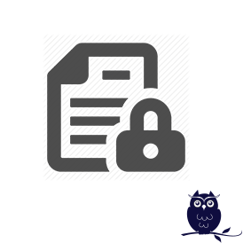

HR Contractor


Limit the visibility of project and tasks
This module allows you to create a limited access to the project and tasks for employees. You can decide which project and tasks you allow an employee to see. For example, a contractor should not see all your clients or projects.
This module also allows these employee to timesheet on those tasks.
Copyright © 